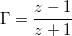

のMagとAngle（度）のデータで、それらからスミスチャートをプロットしたい場合以下のようにします。
のMagとAngle（度）のデータで、それらからスミスチャートをプロットしたい場合以下のようにします。
少なくとも1つのY列と関連するX列を選択する必要があります。
デフォルトでは、XとYの列はZlの実数部と虚数部として扱われます。(Zl=Real+Imag*j).
データが のMagとAngle（度）のデータで、それらからスミスチャートをプロットしたい場合以下のようにします。
メニューの
または、
2Dグラフギャラリーツールバーのスミスチャートボタンをクリックします。
スミスチャートの編集は、作図の詳細と軸ダイアログで行います。 また、 ボタンをクリックしてスミスチャートツールを開くこともできます。
ボタンをクリックしてスミスチャートツールを開くこともできます。
正規化グループ
ファクターを選択して現在のスミスチャートを再正規化します。 正規化実行ボタンをクリックして実行します。
現アクティブデータセットグループ
スミスチャートに複数でデータセットをプロットしているとき、Mag./Ang.にデータ変換およびMag./Ang.データとして再解釈ボタンをアクティブプロットに作用します。 スミスチャートのアクティブデータプロットは、メニューからまたは、凡例でデータプロットアイコンを選択して変更できます。 変更後スミスチャートツールでも更新するには、更新ボタンをクリックします。 (Note: R = 実部, X = 虚部)
Mag./Ang.にデータ変換ボタン
このボタンをクリックすると、アクティブデータプロットをMag./Ang.形式に変更し、ソースワークシートにデータを入力します。  = Mag*exp(j*Angle)
Mag./Ang.データとして再解釈ボタン
このボタンをクリックすると、アクティブデータプロットをMag./Ang.形式として扱い、データをR / X 形式に変換します。 そしてデータを再描画します。
R軸を反転（アドミッタンスチャート）ボタン
このボタンをクリックすると、スミスチャートの実部軸を反転します。
SWR一定円グループ
ポイント位置が指定されている場合は、円のポイント密度と線の色を選択します。 追加ボタンをクリックして、指定されたポイントに一定のSWR円を追加します。
スミスチャートは、Originのプログラムフォルダにインストールされている、SMITHCHT.OTP テンプレートから作成されています。
 実数 1 && -1 虚数 1）の範囲を外れるものは表示されません。
実数 1 && -1 虚数 1）の範囲を外れるものは表示されません。